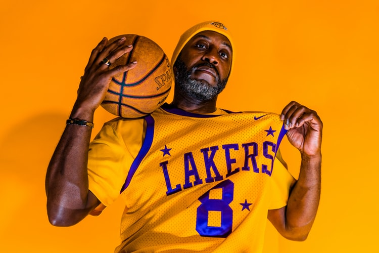

Former pro basketball player Kobe Bryant won five NBA titles with the Los
Angeles Lakers while establishing himself as one of the game's all-time greats
Here is a time line of Kobe Bryant
Early Life
1978-Kobe Bean Bryant was born on August 23, 1978, in Philadelphia, Pennsylvania.
Named after a city in Japan, Bryant is the son of former NBA player Joe "Jellybean" Bryant
1984-after ending his NBA career, the elder Bryant took the family to Italy, where
he played in the Italian League. Growing up in Italy alongside two athletic older sisters, Shaya and
Sharia, Bryant was an avid player of both basketball and soccer.
1991-Bryant joined the Lower Merion High School basketball team, leading it to the
state championships four years in a row. With an eye on the NBA, he also started working out with
the 76ers.
Baskball Career
1998-In his second season with the Lakers, Bryant was voted a starter for the 1998
All-Star
Game, becoming the youngest All-Star in NBA history at 19
2002-2004- shooting guard then teamed up with superstar center Shaquille O'Neal to
win
three consecutive NBA championships and was voted first-team all-NBA from 2002-2004. He also
inked multi-year endorsement deals with Adidas, Sprite and other top sponsors.More
Career..
Death
2020-On January 26, 2020, Bryant was onboard a Sikorsky S-76 helicopter that
crashed in the Los Angeles suburb of Calabasas. Nine people, including Bryant and his 13-year-old
daughter Gianna "Gigi," died. The helicopter was on its way from Orange County to Thousands Oaks,
California where Bryant was scheduled to coach a tournament game at Mamba Sports Academy.
Borlaug's life and achievement are testimony to the far-reaching contribution that one man's
towering
intellect, persistence and scientific vision can make to human peace and progress
REST WELL LEGENG...You Will Forever Be In Our Hearts More
About Kobe